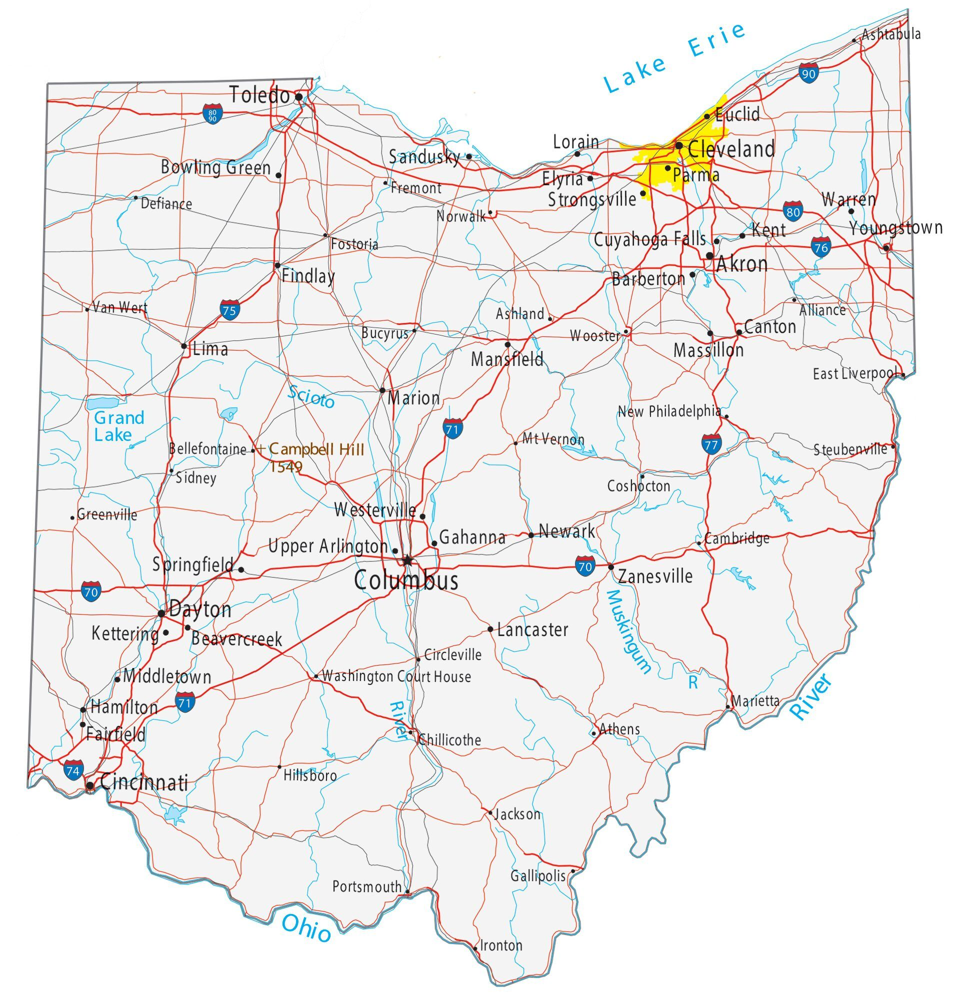

## About Me!
<br>
<p style="color:rgb(48, 48, 255)"><font size="+2">My name is <b>Alexander Cristo Barrameda!</b> I am from Cleveland, Ohio, and I am a rising junior in the class of 2024.</font></p>
<style>
.center {
display: block;
margin-left: auto;
margin-right: auto;
width: 50%;
}
</style>

<p style="color:black">Image found at <b>https://gisgeography.com/ohio-map/</b></p>
<br>
<p style="color:rgb(48, 48, 255)"><font size="+2">My parents are from the island nation of Cuba, so I also speak fluent Spanish! I am very excited to work alongside everyone this summer, and I have a lot to learn! As for my hobbies, I enjoy gaming, vehicles, traveling, and meeting new people. I personally believe that everyone could always learn a new perspective or idea, which is one of my motivations for coming to <font color="crimson"> <b>Harvard.</b> </font> If you ever have any questions, or just want to chat, feel free to email me at <b>abarrameda24@student.ignatius.edu</b>. I am also staying in Canaday Hall A if you need to reach me in person. </font></p>
<br>
<p style="color:black">Return to Main Page <b>[here](../index.html)<b></p>
<br>